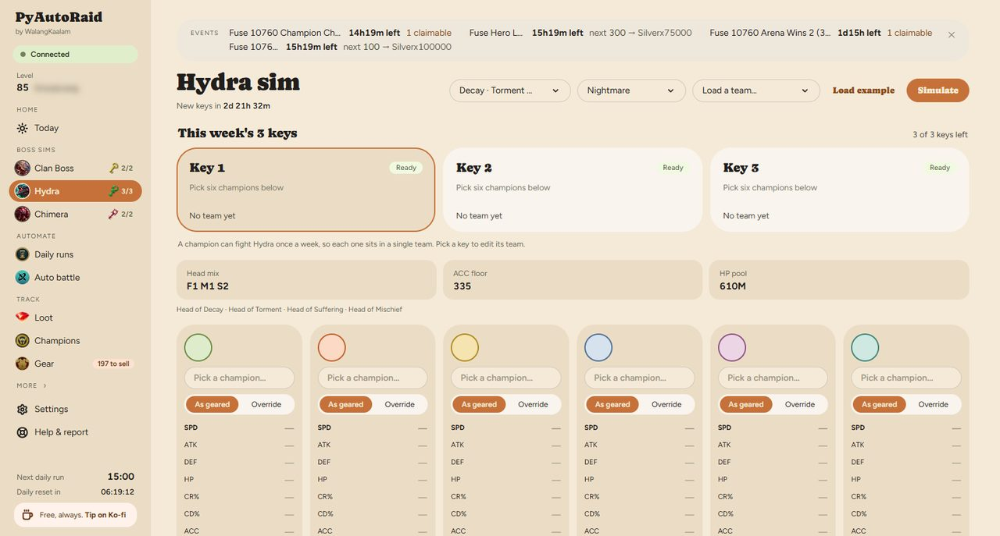
Boss sims
Hydra sim
Six champions against the Hydra's heads, per difficulty and layout, with the damage spread and the chest tier your run lands in.
Hydra keys refill weekly, so a wasted set is a week gone. You see which tier a team actually reaches before you commit.
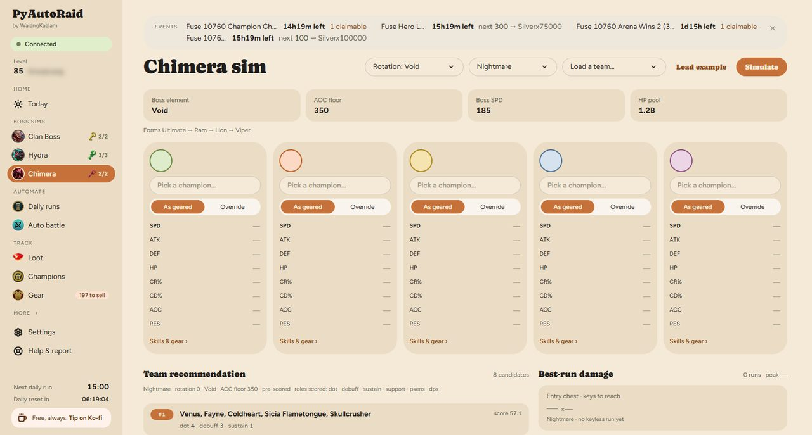
Boss sims
Chimera sim
The Chimera's phases laid out by form, with damage attributed to each form the boss morphs through.
Chimera punishes teams that cannot follow the morph. The phase strip shows where a run falls apart, which is the part a damage total hides.
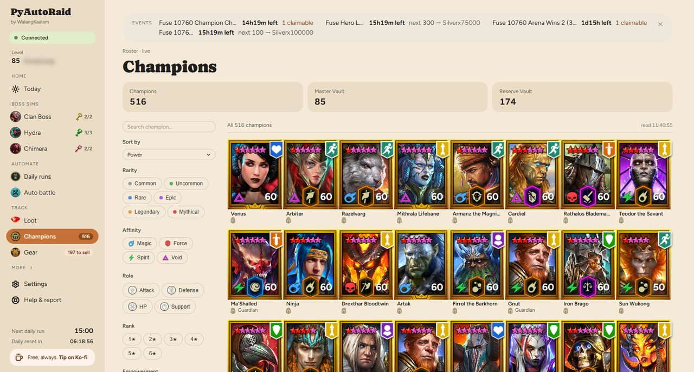
Roster
Champions
Your whole roster drawn with the game's own card art — rarity frames, stars, affinity and level — filtered by rarity, affinity, role, rank, empowerment and faction.
Finding the one champion who fits a slot stops being a scroll through the game's list and becomes a filter.
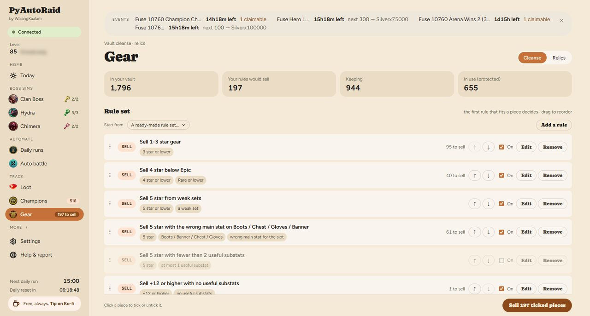
Vault
Gear
The vault organised for cleansing, with a count of what your rules would sell and your Guardian relics under the game's own names.
Vault clutter is the quiet tax of playing. Rules you approve do the sorting, and nothing leaves without your say.
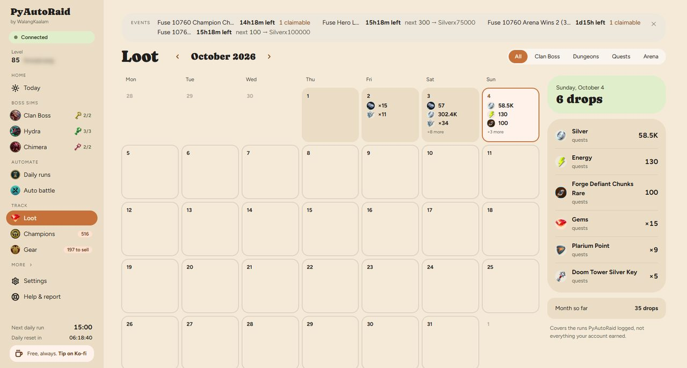
Track
Loot
What you actually earned, by day and by source, with the game's own icons on every figure.
The game shows rewards once, as they land. Here they are still there tomorrow, so you can tell a good farm from a bad one.
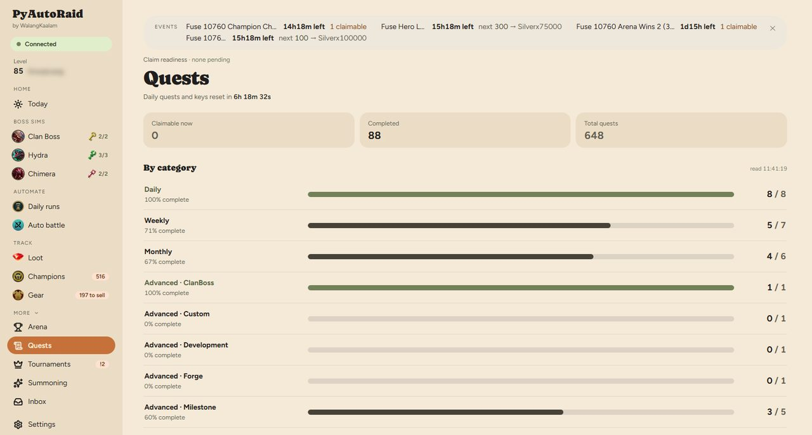
Track
Quests
Every daily, weekly and event quest with how far along it is and whether its reward is sitting unclaimed.
Unclaimed rewards expire. This is the list that stops that happening.
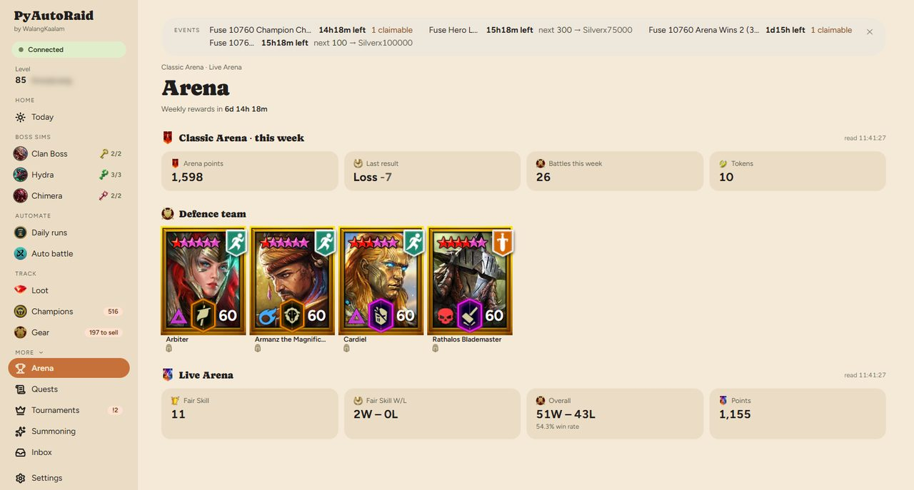
Track
Arena
Classic and Live Arena side by side, with your defence team drawn as champion cards and each champion's flags written out in words.
Your defence is what other players actually meet. Seeing it as cards makes a weak slot obvious.
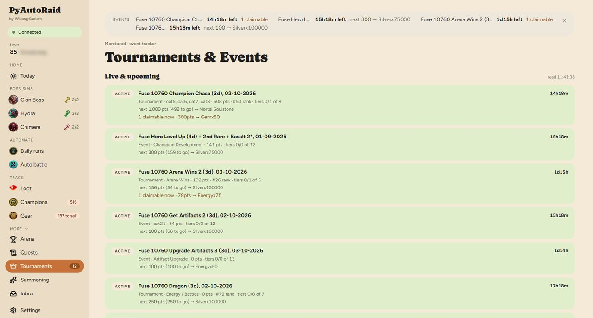
Track
Events
Fusions, tournaments and events being monitored — time remaining and the next tier you are short of.
Fusion tiers are lost to the clock, not to difficulty. Knowing you are 100 short with a day left is the whole game.
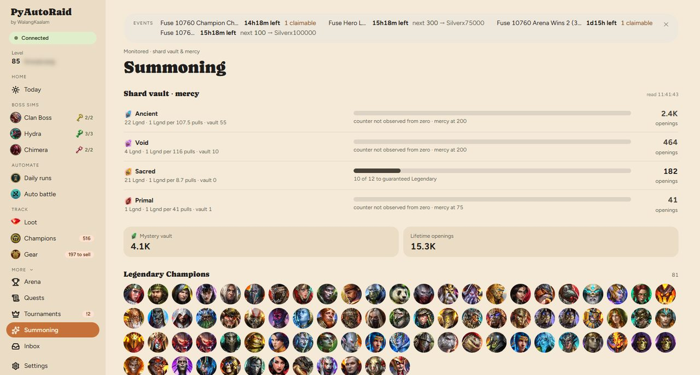
Track
Summoning
Your shard vault by type, with mercy progress counted per shard.
Mercy is the only certainty in summoning. Pulling without knowing where you stand is throwing shards away.
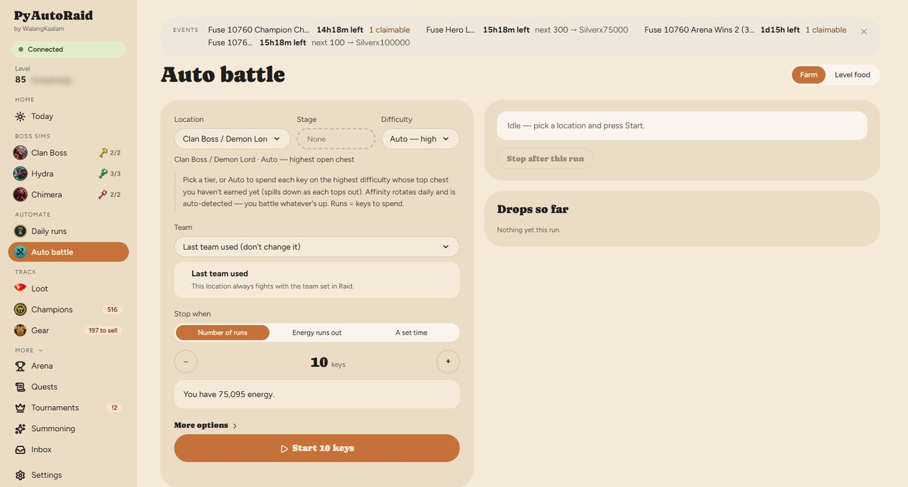
Automate
Auto battle
Choose a team and a stage, set a time to stop, and let it run.
Farming is the part of Raid that is work rather than play. It runs through the mod's API — never by moving your mouse — and stops when you said.
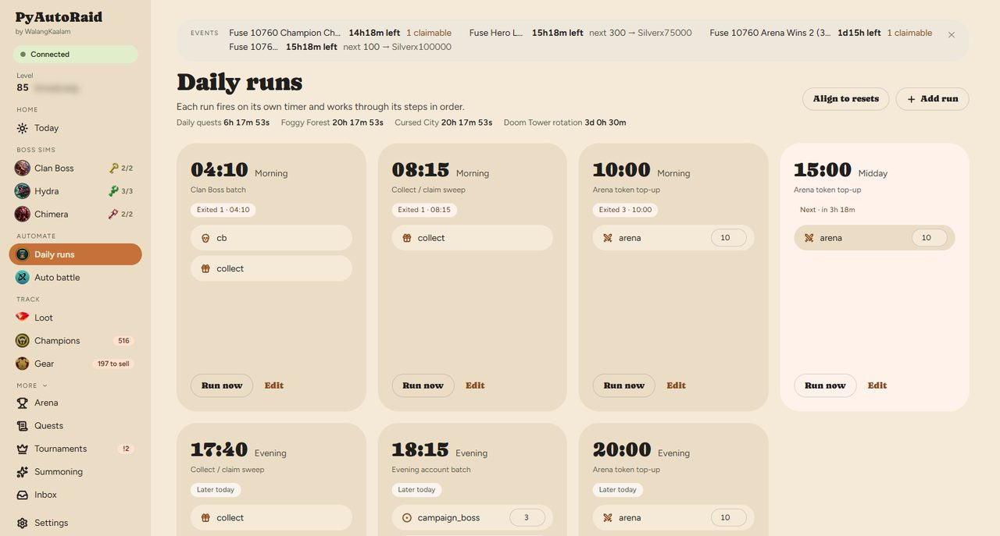
Automate
Daily runs
Jobs on their own timers, each working through its steps in order, with the result of every past run kept.
Dailies get done whether or not you remember them, and when one fails you can see which step it was.
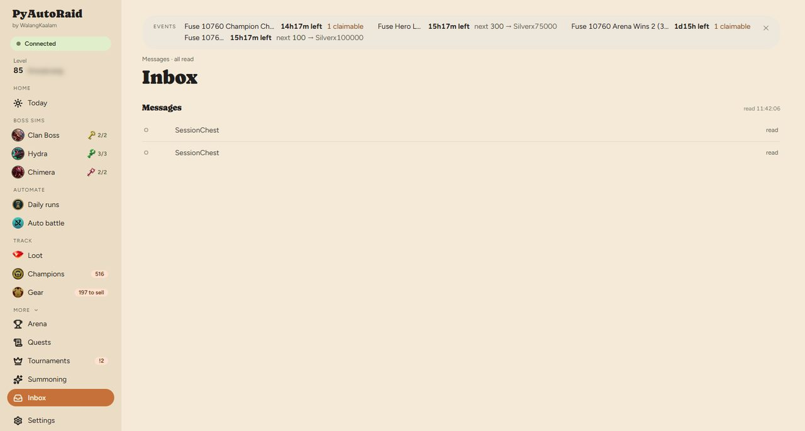
More
Messages
What happened and what needs you, in plain sentences.
No log files, no ports, no stack traces. If something needs a decision it is written as a sentence with a button.
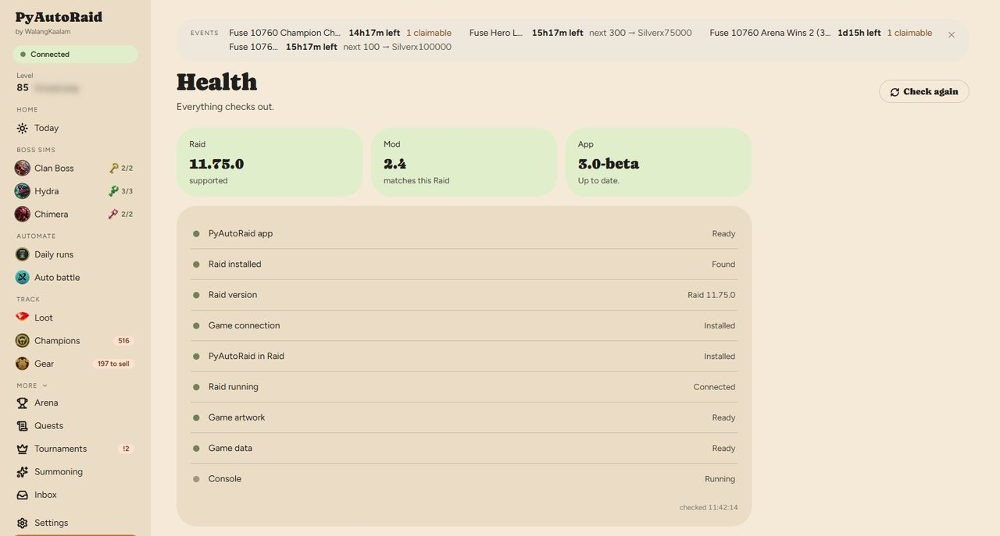
More
Health
Every part checked in order — the game, the mod, the connection, the data — each with a button that fixes it.
When something breaks you are not reading a log. The page names the broken part and offers the repair.
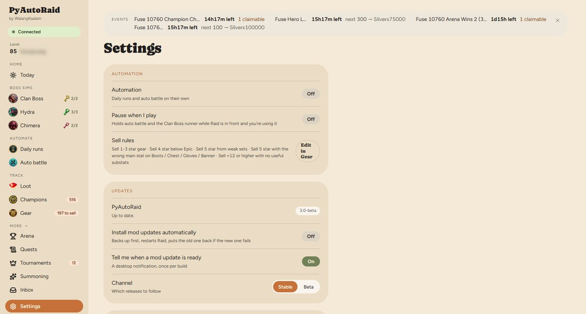
More
Settings
Pause while you are playing, desktop notifications, automatic mod updates, release channel, and one button to send a problem report.
It stays out of your way: it can stand down the moment you sit down to play.